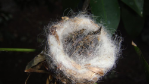
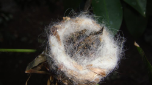

Самые маленькие птицы в мире
 Самая маленькая птичка в мире. Ее длина не превышает шести сантиметров. Еще больше удивляет ее вес – до двух граммов. Это примерно вес половины чайной ложки воды. Живет колибри-пчелка исключительно на Кубе, отдавая предпочтение лесистым, богатым лианами районам. Рацион состоит только из нектара цветов. Гнезда строят такого же крохотного размера, как и они сами – около двух сантиметров в диаметре. В качестве строительного материала используются кусочки коры, лишайника и паутина. В каждой кладке обычно имеется два яйца, размер которых под стать птице – примерно как горошина...
Самая маленькая птичка в мире. Ее длина не превышает шести сантиметров. Еще больше удивляет ее вес – до двух граммов. Это примерно вес половины чайной ложки воды. Живет колибри-пчелка исключительно на Кубе, отдавая предпочтение лесистым, богатым лианами районам. Рацион состоит только из нектара цветов. Гнезда строят такого же крохотного размера, как и они сами – около двух сантиметров в диаметре. В качестве строительного материала используются кусочки коры, лишайника и паутина. В каждой кладке обычно имеется два яйца, размер которых под стать птице – примерно как горошина...
X
Самая маленькая птичка в мире. Ее длина не превышает шести сантиметров. Еще больше удивляет ее вес – до двух граммов. Это примерно вес половины чайной ложки воды. Живет колибри-пчелка исключительно на Кубе, отдавая предпочтение лесистым, богатым лианами районам. Рацион состоит только из нектара цветов. Гнезда строят такого же крохотного размера, как и они сами – около двух сантиметров в диаметре. В качестве строительного материала используются кусочки коры, лишайника и паутина. В каждой кладке обычно имеется два яйца, размер которых под стать птице – примерно как горошина.

Скорость обмена веществ колибри невероятно высока. Чтобы поддержать свой уровень энергии колибри-пчелки собирают нектар примерно с полутора тысяч цветков в день. Их пульс в спокойном состоянии составляет 300 уд/мин. В ночное время они впадают в некое подобие анабиоза: если днем температура их тел составляет 43 градуса по Цельсию, то ночью она составляет около 20-ти градусов. К утру температура вновь поднимается и птица снова готова неутомимо собирать нектар.
К своим малышам колибри-матери относятся очень заботливо. Чтобы птенцы не ослабли и не погибли, она подносит им пищу каждые 8-10 мнут. Несмотря на такой напряженный график, который матери нужно делить с заботой о самой себе, почти все птенцы колибри-пчелки выживают.
Самые маленькие птицы в мире
Самая маленькая птичка в мире. Ее длина не превышает шести сантиметров. Еще больше удивляет ее вес – до двух граммов. Это примерно вес половины чайной ложки воды. Живет колибри-пчелка исключительно на Кубе, отдавая предпочтение лесистым, богатым лианами районам. Рацион состоит только из нектара цветов. Гнезда строят такого же крохотного размера, как и они сами – около двух сантиметров в диаметре. В качестве строительного материала используются кусочки коры, лишайника и паутина. В каждой кладке обычно имеется два яйца, размер которых под стать птице – примерно как горошина.

Скорость обмена веществ колибри невероятно высока. Чтобы поддержать свой уровень энергии колибри-пчелки собирают нектар примерно с полутора тысяч цветков в день. Их пульс в спокойном состоянии составляет 300 уд/мин. В ночное время они впадают в некое подобие анабиоза: если днем температура их тел составляет 43 градуса по Цельсию, то ночью она составляет около 20-ти градусов. К утру температура вновь поднимается и птица снова готова неутомимо собирать нектар.К своим малышам колибри-матери относятся очень заботливо. Чтобы птенцы не ослабли и не погибли, она подносит им пищу каждые 8-10 мнут. Несмотря на такой напряженный график, который матери нужно делить с заботой о самой себе, почти все птенцы колибри-пчелки выживают.
 Дельфины являются удивительнейшими существами. Их разум могуч и загадочен. Даже собаки не могут сравниться с ними по уровню развития интеллекта. Представляем вашему вниманию 33 факта о дельфинах.
Дельфины являются удивительнейшими существами. Их разум могуч и загадочен. Даже собаки не могут сравниться с ними по уровню развития интеллекта. Представляем вашему вниманию 33 факта о дельфинах.